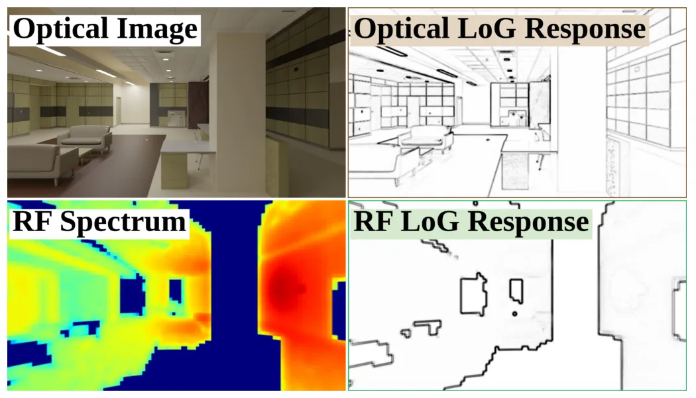
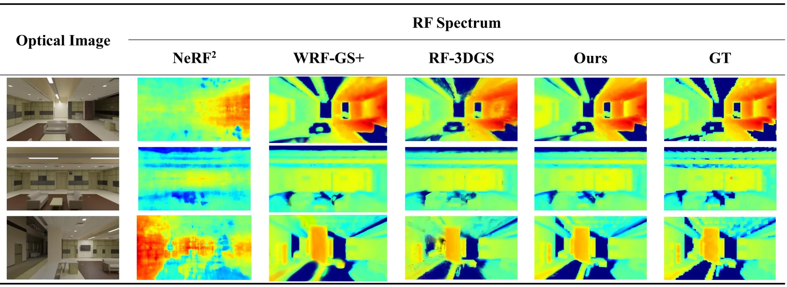
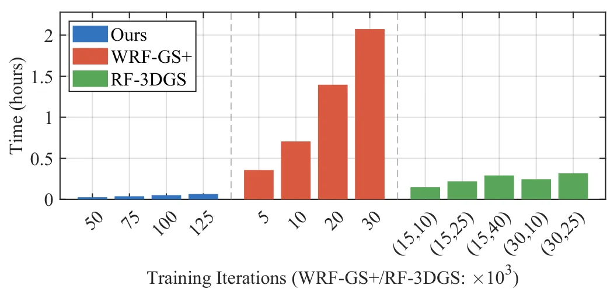
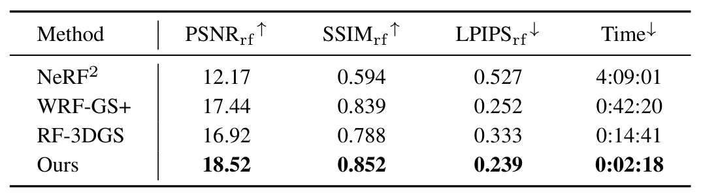
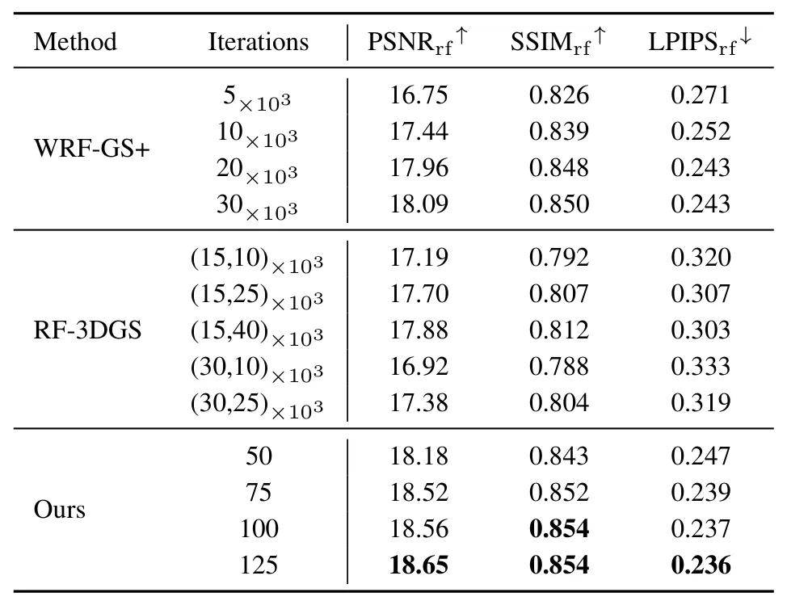
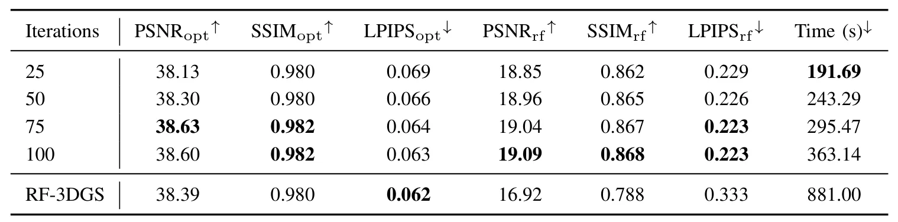
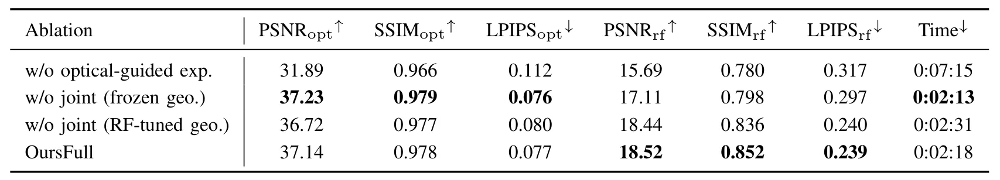

CORF-GS：通过耦合光学—射频 Gaussian Splatting 实时重建无线辐射场CORF-GS: Real-Time Wireless Radiance Field Reconstruction via Coupled Optical-RF Gaussian Splatting
跨模态共享几何和顺序更新对无线地图融合有启发，且给出明确加速结果；并非几何 SLAM，当前主要是仿真，真实 multipath 与时变环境泛化待验证。
一句话工作总结
以共享几何、模态专属外观和在线关键帧优化耦合视觉与 RF Gaussian 地图，仿真中将无线辐射场重建加速 6.4×。
摘要
现有基于 3DGS 的无线辐射场重建通常依赖预采集观测和离线优化，难以及时提供信道知识。CORF-GS 顺序处理 optical/RF keyframes，以共享几何和模态专属外观构成统一 Gaussian representation。新关键帧到达时，系统先利用高分辨率光学图像提供结构先验，在表示不足区域执行 optical-guided Gaussian sampling；随后通过 coupled optical-RF optimization 联合优化 shared Gaussians，防止 RF 被动适配冻结的光学几何，并允许表示同时适应光学结构与 RF power distribution。仿真显示其 RF spectrum synthesis 达到 SOTA，并相对现有 WRF 方法将重建时间缩短 6.4×。
Recent advances in 3D Gaussian Splatting (3DGS)-based wireless radiance field (WRF) reconstruction provide an efficient solution for wireless channel modeling. However, existing WRF reconstruction methods rely on pre-collected observations and offline optimization, and thus struggle to provide real-time channel knowledge. To bridge this gap, we propose CORF-GS, a real-time WRF reconstruction framework that processes sequential optical and radio frequency (RF) keyframes. Specifically, CORF-GS constructs a unified Gaussian representation for optical and RF with shared geometry and modality-specific appearance, allowing high-resolution optical images to provide structural priors for WRF reconstruction. When a new keyframe arrives, CORF-GS first employs optical-guided Gaussian sampling to densify the WRF in under-represented regions. Since light and radio waves may respond differently to the same object surfaces due to wavelength mismatch, relying solely on optical guidance may neglect RF-informative areas. Therefore, CORF-GS performs coupled optical-RF optimization to jointly refine the shared Gaussians. Compared with the existing two-stage training pipelines, this prevents WRF from passively adapting to a frozen optical geometry and encourages the shared Gaussians to adapt to both optical structures and RF power distributions. Simulations show that CORF-GS achieves state-of-the-art RF spectrum synthesis quality and reduces the reconstruction time by $6.4\times$ compared with existing WRF methods.
中文解读摘录
- 作者：Jinya Zhang, Jiajia Guo, Chao-Kai Wen, Shi Jin
- 价值判断：以 shared geometry、modality-specific appearance 统一 optical/RF Gaussians，并按 sequential keyframes 在线更新；对无线地图与视觉几何先验融合有启发。
- 结果与边界：optical-guided densification 后进行 coupled optical-RF optimization，避免 RF 被冻结光学几何被动约束；仿真报告 reconstruction time 降低 6.4×。当前不是几何 SLAM，且仅有 simulation 信号，需验证真实 RF multipath、遮挡与时变环境。
- 链接：arXiv · PDF
图表/页面预览

{kind=link}

{kind=link}

{kind=link}

{kind=link}

{kind=link}

{kind=link}

{kind=link}
